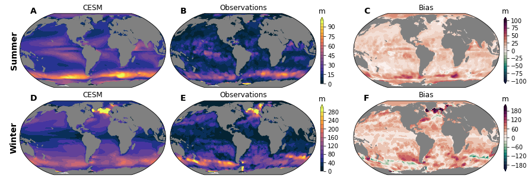
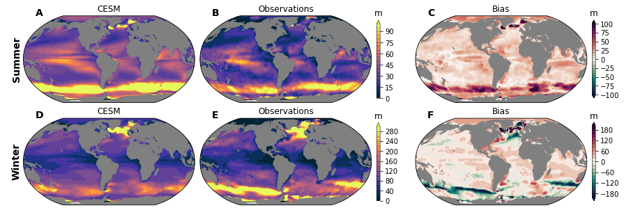

Mixed Layer Depth (MLD)¶
%load_ext autoreload
%autoreload 2
import os
from itertools import product
import pandas as pd
import numpy as np
import xarray as xr
import matplotlib.pyplot as plt
import matplotlib.gridspec as gridspec
import matplotlib.colors as colors
import cmocean
import cartopy
import cartopy.crs as ccrs
import xpersist as xp
cache_dir = '/glade/p/cgd/oce/projects/cesm2-marbl/xpersist_cache/3d_fields'
if (os.path.isdir(cache_dir)):
xp.settings['cache_dir'] = cache_dir
os.makedirs(cache_dir, exist_ok=True)
os.environ['CESMDATAROOT'] = '/glade/scratch/mclong/inputdata'
import pop_tools
import climo_utils as cu
import utils
import calc
import plot
cluster, client = utils.get_ClusterClient()
cluster.scale(36) #adapt(minimum_jobs=0, maximum_jobs=24)
client
Client
|
Cluster
|
ds_grid = pop_tools.get_grid('POP_gx1v7')
/glade/work/mclong/miniconda3/envs/cesm2-marbl/lib/python3.7/site-packages/numba/np/ufunc/parallel.py:365: NumbaWarning: The TBB threading layer requires TBB version 2019.5 or later i.e., TBB_INTERFACE_VERSION >= 11005. Found TBB_INTERFACE_VERSION = 6103. The TBB threading layer is disabled.
warnings.warn(problem)
def monthly_clim(ds):
return ds.groupby('time.month').mean('time')
time_slice = slice("1990-01-15", "2015-01-15")
varlist = [
'TEMP',
'SALT',
]
ds_list = []
for variable in varlist:
xp_func = xp.persist_ds(cu.read_CESM_var, name=f'{variable}-presentday-monclim', trust_cache=True)
ds_list.append(xp_func(
time_slice,
variable,
postprocess=monthly_clim,
))
ds = xr.merge(ds_list)[['SALT', 'TEMP']]
ds
assuming cache is correct
reading cached file: /glade/p/cgd/oce/projects/cesm2-marbl/xpersist_cache/3d_fields/TEMP-presentday-monclim.nc
assuming cache is correct
reading cached file: /glade/p/cgd/oce/projects/cesm2-marbl/xpersist_cache/3d_fields/SALT-presentday-monclim.nc
<xarray.Dataset>
Dimensions: (member_id: 11, month: 12, nlat: 384, nlon: 320, z_t: 60)
Coordinates:
* z_t (z_t) float32 500.0 1.5e+03 2.5e+03 ... 5.125e+05 5.375e+05
TLONG (nlat, nlon) float64 320.6 321.7 322.8 ... 318.9 319.4 319.8
TLAT (nlat, nlon) float64 -79.22 -79.22 -79.22 ... 72.2 72.19 72.19
* member_id (member_id) int64 1 2 3 4 5 6 7 8 9 10 11
ULONG (nlat, nlon) float64 321.1 322.3 323.4 ... 319.2 319.6 320.0
ULAT (nlat, nlon) float64 -78.95 -78.95 -78.95 ... 72.42 72.41 72.41
* month (month) int64 1 2 3 4 5 6 7 8 9 10 11 12
Dimensions without coordinates: nlat, nlon
Data variables:
SALT (month, member_id, z_t, nlat, nlon) float32 ...
TEMP (month, member_id, z_t, nlat, nlon) float32 ...xarray.Dataset
- member_id: 11
- month: 12
- nlat: 384
- nlon: 320
- z_t: 60
- z_t(z_t)float32500.0 1.5e+03 ... 5.375e+05
- long_name :
- depth from surface to midpoint of layer
- units :
- centimeters
- positive :
- down
- valid_min :
- 500.0
- valid_max :
- 537500.0
array([5.000000e+02, 1.500000e+03, 2.500000e+03, 3.500000e+03, 4.500000e+03, 5.500000e+03, 6.500000e+03, 7.500000e+03, 8.500000e+03, 9.500000e+03, 1.050000e+04, 1.150000e+04, 1.250000e+04, 1.350000e+04, 1.450000e+04, 1.550000e+04, 1.650984e+04, 1.754790e+04, 1.862913e+04, 1.976603e+04, 2.097114e+04, 2.225783e+04, 2.364088e+04, 2.513702e+04, 2.676542e+04, 2.854837e+04, 3.051192e+04, 3.268680e+04, 3.510935e+04, 3.782276e+04, 4.087846e+04, 4.433777e+04, 4.827367e+04, 5.277280e+04, 5.793729e+04, 6.388626e+04, 7.075633e+04, 7.870025e+04, 8.788252e+04, 9.847059e+04, 1.106204e+05, 1.244567e+05, 1.400497e+05, 1.573946e+05, 1.764003e+05, 1.968944e+05, 2.186457e+05, 2.413972e+05, 2.649001e+05, 2.889385e+05, 3.133405e+05, 3.379793e+05, 3.627670e+05, 3.876452e+05, 4.125768e+05, 4.375392e+05, 4.625190e+05, 4.875083e+05, 5.125028e+05, 5.375000e+05], dtype=float32) - TLONG(nlat, nlon)float64320.6 321.7 322.8 ... 319.4 319.8
- long_name :
- array of t-grid longitudes
- units :
- degrees_east
array([[320.56250892, 321.68750895, 322.81250898, ..., 317.18750883, 318.31250886, 319.43750889], [320.56250892, 321.68750895, 322.81250898, ..., 317.18750883, 318.31250886, 319.43750889], [320.56250892, 321.68750895, 322.81250898, ..., 317.18750883, 318.31250886, 319.43750889], ..., [320.25133086, 320.75380113, 321.25577325, ..., 318.74424456, 319.24621668, 319.74869143], [320.23459477, 320.70358949, 321.17207442, ..., 318.82794339, 319.29642832, 319.76542721], [320.21650899, 320.6493303 , 321.08163473, ..., 318.91838308, 319.3506875 , 319.78351267]]) - TLAT(nlat, nlon)float64-79.22 -79.22 ... 72.19 72.19
- long_name :
- array of t-grid latitudes
- units :
- degrees_north
array([[-79.22052261, -79.22052261, -79.22052261, ..., -79.22052261, -79.22052261, -79.22052261], [-78.68630626, -78.68630626, -78.68630626, ..., -78.68630626, -78.68630626, -78.68630626], [-78.15208992, -78.15208992, -78.15208992, ..., -78.15208992, -78.15208992, -78.15208992], ..., [ 71.29031715, 71.29408252, 71.30160692, ..., 71.30160692, 71.29408252, 71.29031716], [ 71.73524335, 71.73881845, 71.74596231, ..., 71.74596231, 71.73881845, 71.73524335], [ 72.18597561, 72.18933231, 72.19603941, ..., 72.19603941, 72.18933231, 72.18597562]]) - member_id(member_id)int641 2 3 4 5 6 7 8 9 10 11
array([ 1, 2, 3, 4, 5, 6, 7, 8, 9, 10, 11])
- ULONG(nlat, nlon)float64321.1 322.3 323.4 ... 319.6 320.0
- long_name :
- array of u-grid longitudes
- units :
- degrees_east
array([[321.12500894, 322.25000897, 323.375009 , ..., 317.75000884, 318.87500887, 320.0000089 ], [321.12500894, 322.25000897, 323.375009 , ..., 317.75000884, 318.87500887, 320.0000089 ], [321.12500894, 322.25000897, 323.375009 , ..., 317.75000884, 318.87500887, 320.0000089 ], ..., [320.48637802, 320.97240884, 321.4577638 , ..., 319.02760897, 319.51363979, 320.00001324], [320.45160767, 320.90286181, 321.35342745, ..., 319.097156 , 319.54841014, 320.00001293], [320.41397858, 320.82760085, 321.24052915, ..., 319.17241696, 319.58603923, 320.00001259]]) - ULAT(nlat, nlon)float64-78.95 -78.95 ... 72.41 72.41
- long_name :
- array of u-grid latitudes
- units :
- degrees_north
array([[-78.95289509, -78.95289509, -78.95289509, ..., -78.95289509, -78.95289509, -78.95289509], [-78.41865507, -78.41865507, -78.41865507, ..., -78.41865507, -78.41865507, -78.41865507], [-77.88441506, -77.88441506, -77.88441506, ..., -77.88441506, -77.88441506, -77.88441506], ..., [ 71.51215224, 71.51766482, 71.52684191, ..., 71.51766482, 71.51215224, 71.51031365], [ 71.95983548, 71.96504258, 71.97371054, ..., 71.96504258, 71.95983548, 71.95809872], [ 72.4135549 , 72.41841155, 72.42649554, ..., 72.41841155, 72.4135549 , 72.41193498]]) - month(month)int641 2 3 4 5 6 7 8 9 10 11 12
array([ 1, 2, 3, 4, 5, 6, 7, 8, 9, 10, 11, 12])
- SALT(month, member_id, z_t, nlat, nlon)float32...
[973209600 values with dtype=float32]
- TEMP(month, member_id, z_t, nlat, nlon)float32...
[973209600 values with dtype=float32]
%%time
def ds_mon_to_ds_season(ds_mon):
ds_mon = ds_mon.copy()
ds_mon['season'] = xr.DataArray(['DJF']*2 + ['MAM']*3 + ['JJA']*3 + ['SON']*3 + ['DJF'], dims=('month'))
ds_mon['dpm'] = xr.DataArray([31., 28., 31., 30., 31., 30., 31., 31., 30., 31., 30., 31.], dims=('month'))
ds_mon = ds_mon.set_coords(['season', 'dpm'])
weights = ds_mon.dpm.groupby('season') / ds_mon.dpm.groupby('season').sum()
np.testing.assert_allclose(weights.groupby('season').sum().values, np.ones(4))
return (ds_mon * weights).groupby('season').sum(dim='month')
def compute_mld_model(dsigma):
da_list = []
for n in range(len(ds.member_id)):
print(f'member_id {n}')
da_list.append(
calc.mld_dsigma(
ds.SALT.isel(member_id=n).load(),
ds.TEMP.isel(member_id=n).load(),
dsigma=dsigma,).compute()
)
return xr.concat(ds_list, dim='member_id').to_dataset()
mld_list = []
for dsigma in [0.03, 0.125]:
xp_func = xp.persist_ds(
compute_mld_model,
name=f'historical-mld-moc-MLD_{int(dsigma*1e3):03d}',
trust_cache=True,
format='zarr',
)
mld_list.append(xp_func(dsigma).rename({'MLD': f'mld_{int(dsigma*1e3):03d}'}))
ds_mld = xr.merge(mld_list)
# convert units
for v in ds_mld.data_vars:
ds_mld[v] = ds_mld[v] * 1e-2
ds_mld[v].attrs['units'] = 'm'
ds_mld = ds_mon_to_ds_season(ds_mld).mean('member_id').compute()
for v in ['TLONG', 'TLAT', 'KMT']:
ds_mld[v] = ds_grid[v]
ds_mld
assuming cache is correct
reading cached file: /glade/p/cgd/oce/projects/cesm2-marbl/xpersist_cache/3d_fields/historical-mld-moc-MLD_030.zarr
assuming cache is correct
reading cached file: /glade/p/cgd/oce/projects/cesm2-marbl/xpersist_cache/3d_fields/historical-mld-moc-MLD_125.zarr
CPU times: user 2.23 s, sys: 325 ms, total: 2.56 s
Wall time: 32.3 s
<xarray.Dataset>
Dimensions: (nlat: 384, nlon: 320, season: 4)
Coordinates:
* nlat (nlat) int64 0 1 2 3 4 5 6 7 8 ... 376 377 378 379 380 381 382 383
* nlon (nlon) int64 0 1 2 3 4 5 6 7 8 ... 312 313 314 315 316 317 318 319
* season (season) object 'DJF' 'JJA' 'MAM' 'SON'
Data variables:
mld_030 (season, nlat, nlon) float64 0.0 0.0 0.0 0.0 ... 0.0 0.0 0.0 0.0
mld_125 (season, nlat, nlon) float64 0.0 0.0 0.0 0.0 ... 0.0 0.0 0.0 0.0
TLONG (nlat, nlon) float64 320.6 321.7 322.8 323.9 ... 318.9 319.4 319.8
TLAT (nlat, nlon) float64 -79.22 -79.22 -79.22 ... 72.2 72.19 72.19
KMT (nlat, nlon) int32 0 0 0 0 0 0 0 0 0 0 0 ... 0 0 0 0 0 0 0 0 0 0 0xarray.Dataset
- nlat: 384
- nlon: 320
- season: 4
- nlat(nlat)int640 1 2 3 4 5 ... 379 380 381 382 383
array([ 0, 1, 2, ..., 381, 382, 383])
- nlon(nlon)int640 1 2 3 4 5 ... 315 316 317 318 319
array([ 0, 1, 2, ..., 317, 318, 319])
- season(season)object'DJF' 'JJA' 'MAM' 'SON'
array(['DJF', 'JJA', 'MAM', 'SON'], dtype=object)
- mld_030(season, nlat, nlon)float640.0 0.0 0.0 0.0 ... 0.0 0.0 0.0 0.0
array([[[ 0. , 0. , 0. , ..., 0. , 0. , 0. ], [ 0. , 0. , 0. , ..., 0. , 0. , 0. ], [ 48.28568694, 50.19280488, 50.96576212, ..., 0. , 0. , 0. ], ..., [ 0. , 0. , 0. , ..., 0. , 0. , 0. ], [ 0. , 0. , 0. , ..., 0. , 0. , 0. ], [ 0. , 0. , 0. , ..., 0. , 0. , 0. ]], [[ 0. , 0. , 0. , ..., 0. , 0. , 0. ], [ 0. , 0. , 0. , ..., 0. , 0. , 0. ], [ 92.12140933, 94.17433989, 95.23810369, ..., 0. , 0. , 0. ], ... [ 0. , 0. , 0. , ..., 0. , 0. , 0. ], [ 0. , 0. , 0. , ..., 0. , 0. , 0. ], [ 0. , 0. , 0. , ..., 0. , 0. , 0. ]], [[ 0. , 0. , 0. , ..., 0. , 0. , 0. ], [ 0. , 0. , 0. , ..., 0. , 0. , 0. ], [141.72313713, 146.84691757, 148.93963727, ..., 0. , 0. , 0. ], ..., [ 0. , 0. , 0. , ..., 0. , 0. , 0. ], [ 0. , 0. , 0. , ..., 0. , 0. , 0. ], [ 0. , 0. , 0. , ..., 0. , 0. , 0. ]]]) - mld_125(season, nlat, nlon)float640.0 0.0 0.0 0.0 ... 0.0 0.0 0.0 0.0
array([[[ 0. , 0. , 0. , ..., 0. , 0. , 0. ], [ 0. , 0. , 0. , ..., 0. , 0. , 0. ], [125.81649309, 125.01798297, 125.29228702, ..., 0. , 0. , 0. ], ..., [ 0. , 0. , 0. , ..., 0. , 0. , 0. ], [ 0. , 0. , 0. , ..., 0. , 0. , 0. ], [ 0. , 0. , 0. , ..., 0. , 0. , 0. ]], [[ 0. , 0. , 0. , ..., 0. , 0. , 0. ], [ 0. , 0. , 0. , ..., 0. , 0. , 0. ], [198.98749021, 201.6543587 , 202.66730075, ..., 0. , 0. , 0. ], ... [ 0. , 0. , 0. , ..., 0. , 0. , 0. ], [ 0. , 0. , 0. , ..., 0. , 0. , 0. ], [ 0. , 0. , 0. , ..., 0. , 0. , 0. ]], [[ 0. , 0. , 0. , ..., 0. , 0. , 0. ], [ 0. , 0. , 0. , ..., 0. , 0. , 0. ], [284.17373367, 286.22682687, 286.50413277, ..., 0. , 0. , 0. ], ..., [ 0. , 0. , 0. , ..., 0. , 0. , 0. ], [ 0. , 0. , 0. , ..., 0. , 0. , 0. ], [ 0. , 0. , 0. , ..., 0. , 0. , 0. ]]]) - TLONG(nlat, nlon)float64320.6 321.7 322.8 ... 319.4 319.8
- units :
- degrees_east
- long_name :
- T-grid longitude
array([[320.56250892, 321.68750895, 322.81250898, ..., 317.18750883, 318.31250886, 319.43750889], [320.56250892, 321.68750895, 322.81250898, ..., 317.18750883, 318.31250886, 319.43750889], [320.56250892, 321.68750895, 322.81250898, ..., 317.18750883, 318.31250886, 319.43750889], ..., [320.25133086, 320.75380113, 321.25577325, ..., 318.74424456, 319.24621668, 319.74869143], [320.23459477, 320.70358949, 321.17207442, ..., 318.82794339, 319.29642832, 319.76542721], [320.21650899, 320.6493303 , 321.08163473, ..., 318.91838308, 319.3506875 , 319.78351267]]) - TLAT(nlat, nlon)float64-79.22 -79.22 ... 72.19 72.19
- units :
- degrees_north
- long_name :
- T-grid latitude
array([[-79.22052261, -79.22052261, -79.22052261, ..., -79.22052261, -79.22052261, -79.22052261], [-78.68630626, -78.68630626, -78.68630626, ..., -78.68630626, -78.68630626, -78.68630626], [-78.15208992, -78.15208992, -78.15208992, ..., -78.15208992, -78.15208992, -78.15208992], ..., [ 71.29031715, 71.29408252, 71.30160692, ..., 71.30160692, 71.29408252, 71.29031716], [ 71.73524335, 71.73881845, 71.74596231, ..., 71.74596231, 71.73881845, 71.73524335], [ 72.18597561, 72.18933231, 72.19603941, ..., 72.19603941, 72.18933231, 72.18597562]]) - KMT(nlat, nlon)int320 0 0 0 0 0 0 0 ... 0 0 0 0 0 0 0 0
- long_name :
- k Index of Deepest Grid Cell on T Grid
- coordinates :
- TLONG TLAT
array([[ 0, 0, 0, ..., 0, 0, 0], [ 0, 0, 0, ..., 0, 0, 0], [38, 38, 38, ..., 0, 0, 0], ..., [ 0, 0, 0, ..., 0, 0, 0], [ 0, 0, 0, ..., 0, 0, 0], [ 0, 0, 0, ..., 0, 0, 0]], dtype=int32)
ds_obs = xr.open_dataset(
'/glade/p/cgd/oce/projects/cesm2-marbl/woa2018-data/POP_gx1v7/monthly/woa18_derived_MLD.nc',
)
ds_obs = ds_mon_to_ds_season(ds_obs)
ds_obs = ds_obs.rename({k: f'{k}_obs' for k in ds_obs.data_vars})
ds_mld = xr.merge((ds_mld, ds_obs))
ds_mld
<xarray.Dataset>
Dimensions: (nlat: 384, nlon: 320, season: 4)
Coordinates:
* nlat (nlat) int64 0 1 2 3 4 5 6 7 ... 377 378 379 380 381 382 383
* nlon (nlon) int64 0 1 2 3 4 5 6 7 ... 313 314 315 316 317 318 319
* season (season) object 'DJF' 'JJA' 'MAM' 'SON'
Data variables:
mld_030 (season, nlat, nlon) float64 0.0 0.0 0.0 0.0 ... 0.0 0.0 0.0
mld_125 (season, nlat, nlon) float64 0.0 0.0 0.0 0.0 ... 0.0 0.0 0.0
TLONG (nlat, nlon) float64 320.6 321.7 322.8 ... 318.9 319.4 319.8
TLAT (nlat, nlon) float64 -79.22 -79.22 -79.22 ... 72.2 72.19 72.19
KMT (nlat, nlon) int32 0 0 0 0 0 0 0 0 0 0 ... 0 0 0 0 0 0 0 0 0 0
mld_125_obs (season, nlat, nlon) float64 0.0 0.0 0.0 0.0 ... 0.0 0.0 0.0
mld_030_obs (season, nlat, nlon) float64 0.0 0.0 0.0 0.0 ... 0.0 0.0 0.0xarray.Dataset
- nlat: 384
- nlon: 320
- season: 4
- nlat(nlat)int640 1 2 3 4 5 ... 379 380 381 382 383
array([ 0, 1, 2, ..., 381, 382, 383])
- nlon(nlon)int640 1 2 3 4 5 ... 315 316 317 318 319
array([ 0, 1, 2, ..., 317, 318, 319])
- season(season)object'DJF' 'JJA' 'MAM' 'SON'
array(['DJF', 'JJA', 'MAM', 'SON'], dtype=object)
- mld_030(season, nlat, nlon)float640.0 0.0 0.0 0.0 ... 0.0 0.0 0.0 0.0
array([[[ 0. , 0. , 0. , ..., 0. , 0. , 0. ], [ 0. , 0. , 0. , ..., 0. , 0. , 0. ], [ 48.28568694, 50.19280488, 50.96576212, ..., 0. , 0. , 0. ], ..., [ 0. , 0. , 0. , ..., 0. , 0. , 0. ], [ 0. , 0. , 0. , ..., 0. , 0. , 0. ], [ 0. , 0. , 0. , ..., 0. , 0. , 0. ]], [[ 0. , 0. , 0. , ..., 0. , 0. , 0. ], [ 0. , 0. , 0. , ..., 0. , 0. , 0. ], [ 92.12140933, 94.17433989, 95.23810369, ..., 0. , 0. , 0. ], ... [ 0. , 0. , 0. , ..., 0. , 0. , 0. ], [ 0. , 0. , 0. , ..., 0. , 0. , 0. ], [ 0. , 0. , 0. , ..., 0. , 0. , 0. ]], [[ 0. , 0. , 0. , ..., 0. , 0. , 0. ], [ 0. , 0. , 0. , ..., 0. , 0. , 0. ], [141.72313713, 146.84691757, 148.93963727, ..., 0. , 0. , 0. ], ..., [ 0. , 0. , 0. , ..., 0. , 0. , 0. ], [ 0. , 0. , 0. , ..., 0. , 0. , 0. ], [ 0. , 0. , 0. , ..., 0. , 0. , 0. ]]]) - mld_125(season, nlat, nlon)float640.0 0.0 0.0 0.0 ... 0.0 0.0 0.0 0.0
array([[[ 0. , 0. , 0. , ..., 0. , 0. , 0. ], [ 0. , 0. , 0. , ..., 0. , 0. , 0. ], [125.81649309, 125.01798297, 125.29228702, ..., 0. , 0. , 0. ], ..., [ 0. , 0. , 0. , ..., 0. , 0. , 0. ], [ 0. , 0. , 0. , ..., 0. , 0. , 0. ], [ 0. , 0. , 0. , ..., 0. , 0. , 0. ]], [[ 0. , 0. , 0. , ..., 0. , 0. , 0. ], [ 0. , 0. , 0. , ..., 0. , 0. , 0. ], [198.98749021, 201.6543587 , 202.66730075, ..., 0. , 0. , 0. ], ... [ 0. , 0. , 0. , ..., 0. , 0. , 0. ], [ 0. , 0. , 0. , ..., 0. , 0. , 0. ], [ 0. , 0. , 0. , ..., 0. , 0. , 0. ]], [[ 0. , 0. , 0. , ..., 0. , 0. , 0. ], [ 0. , 0. , 0. , ..., 0. , 0. , 0. ], [284.17373367, 286.22682687, 286.50413277, ..., 0. , 0. , 0. ], ..., [ 0. , 0. , 0. , ..., 0. , 0. , 0. ], [ 0. , 0. , 0. , ..., 0. , 0. , 0. ], [ 0. , 0. , 0. , ..., 0. , 0. , 0. ]]]) - TLONG(nlat, nlon)float64320.6 321.7 322.8 ... 319.4 319.8
- units :
- degrees_east
- long_name :
- T-grid longitude
array([[320.56250892, 321.68750895, 322.81250898, ..., 317.18750883, 318.31250886, 319.43750889], [320.56250892, 321.68750895, 322.81250898, ..., 317.18750883, 318.31250886, 319.43750889], [320.56250892, 321.68750895, 322.81250898, ..., 317.18750883, 318.31250886, 319.43750889], ..., [320.25133086, 320.75380113, 321.25577325, ..., 318.74424456, 319.24621668, 319.74869143], [320.23459477, 320.70358949, 321.17207442, ..., 318.82794339, 319.29642832, 319.76542721], [320.21650899, 320.6493303 , 321.08163473, ..., 318.91838308, 319.3506875 , 319.78351267]]) - TLAT(nlat, nlon)float64-79.22 -79.22 ... 72.19 72.19
- units :
- degrees_north
- long_name :
- T-grid latitude
array([[-79.22052261, -79.22052261, -79.22052261, ..., -79.22052261, -79.22052261, -79.22052261], [-78.68630626, -78.68630626, -78.68630626, ..., -78.68630626, -78.68630626, -78.68630626], [-78.15208992, -78.15208992, -78.15208992, ..., -78.15208992, -78.15208992, -78.15208992], ..., [ 71.29031715, 71.29408252, 71.30160692, ..., 71.30160692, 71.29408252, 71.29031716], [ 71.73524335, 71.73881845, 71.74596231, ..., 71.74596231, 71.73881845, 71.73524335], [ 72.18597561, 72.18933231, 72.19603941, ..., 72.19603941, 72.18933231, 72.18597562]]) - KMT(nlat, nlon)int320 0 0 0 0 0 0 0 ... 0 0 0 0 0 0 0 0
- long_name :
- k Index of Deepest Grid Cell on T Grid
- coordinates :
- TLONG TLAT
array([[ 0, 0, 0, ..., 0, 0, 0], [ 0, 0, 0, ..., 0, 0, 0], [38, 38, 38, ..., 0, 0, 0], ..., [ 0, 0, 0, ..., 0, 0, 0], [ 0, 0, 0, ..., 0, 0, 0], [ 0, 0, 0, ..., 0, 0, 0]], dtype=int32) - mld_125_obs(season, nlat, nlon)float640.0 0.0 0.0 0.0 ... 0.0 0.0 0.0 0.0
array([[[ 0. , 0. , 0. , ..., 0. , 0. , 0. ], [ 0. , 0. , 0. , ..., 0. , 0. , 0. ], [161.44966782, 160.68995418, 160.06039374, ..., 0. , 0. , 0. ], ..., [ 0. , 0. , 0. , ..., 0. , 0. , 0. ], [ 0. , 0. , 0. , ..., 0. , 0. , 0. ], [ 0. , 0. , 0. , ..., 0. , 0. , 0. ]], [[ 0. , 0. , 0. , ..., 0. , 0. , 0. ], [ 0. , 0. , 0. , ..., 0. , 0. , 0. ], [190.1108242 , 186.88995437, 166.04577202, ..., 0. , 0. , 0. ], ... [ 0. , 0. , 0. , ..., 0. , 0. , 0. ], [ 0. , 0. , 0. , ..., 0. , 0. , 0. ], [ 0. , 0. , 0. , ..., 0. , 0. , 0. ]], [[ 0. , 0. , 0. , ..., 0. , 0. , 0. ], [ 0. , 0. , 0. , ..., 0. , 0. , 0. ], [384.08304788, 387.0323566 , 383.78857525, ..., 0. , 0. , 0. ], ..., [ 0. , 0. , 0. , ..., 0. , 0. , 0. ], [ 0. , 0. , 0. , ..., 0. , 0. , 0. ], [ 0. , 0. , 0. , ..., 0. , 0. , 0. ]]]) - mld_030_obs(season, nlat, nlon)float640.0 0.0 0.0 0.0 ... 0.0 0.0 0.0 0.0
array([[[ 0. , 0. , 0. , ..., 0. , 0. , 0. ], [ 0. , 0. , 0. , ..., 0. , 0. , 0. ], [ 86.01953939, 75.30919378, 69.68326339, ..., 0. , 0. , 0. ], ..., [ 0. , 0. , 0. , ..., 0. , 0. , 0. ], [ 0. , 0. , 0. , ..., 0. , 0. , 0. ], [ 0. , 0. , 0. , ..., 0. , 0. , 0. ]], [[ 0. , 0. , 0. , ..., 0. , 0. , 0. ], [ 0. , 0. , 0. , ..., 0. , 0. , 0. ], [ 71.5857225 , 89.08689686, 88.56236398, ..., 0. , 0. , 0. ], ... [ 0. , 0. , 0. , ..., 0. , 0. , 0. ], [ 0. , 0. , 0. , ..., 0. , 0. , 0. ], [ 0. , 0. , 0. , ..., 0. , 0. , 0. ]], [[ 0. , 0. , 0. , ..., 0. , 0. , 0. ], [ 0. , 0. , 0. , ..., 0. , 0. , 0. ], [205.97600921, 247.29922369, 238.59880786, ..., 0. , 0. , 0. ], ..., [ 0. , 0. , 0. , ..., 0. , 0. , 0. ], [ 0. , 0. , 0. , ..., 0. , 0. , 0. ], [ 0. , 0. , 0. , ..., 0. , 0. , 0. ]]])
client.close()
cluster.close()
del client
del cluster
ds_mld.mld_125.sel(season='DJF').plot()
<matplotlib.collections.QuadMesh at 0x2b85be352f50>
ds_mld.mld_125.sel(season='DJF').plot()
<matplotlib.collections.QuadMesh at 0x2b85bf6599d0>

ds_mld_merged = xr.Dataset({k: ds_grid[k] for k in ['TLONG', 'TLAT']})
for v in ['mld_125', 'mld_030', 'mld_125_obs', 'mld_030_obs']:
ds_mld_merged[f'{v}_summer'] = xr.where(ds_mld.TLAT < 0., ds_mld[v].sel(season='DJF'), ds_mld[v].sel(season='JJA'))
ds_mld_merged[f'{v}_winter'] = xr.where(ds_mld.TLAT > 0., ds_mld[v].sel(season='DJF'), ds_mld[v].sel(season='JJA'))
ds_mld_merged = utils.pop_add_cyclic(ds_mld_merged.drop(['nlat', 'nlon'])).compute()
ds_mld_merged
<xarray.Dataset>
Dimensions: (nlat: 384, nlon: 321)
Dimensions without coordinates: nlat, nlon
Data variables:
TLAT (nlat, nlon) float64 -79.22 -79.22 ... 80.31 80.31
TLONG (nlat, nlon) float64 -220.6 -219.4 ... -39.57 -39.86
mld_125_summer (nlat, nlon) float64 0.0 0.0 0.0 0.0 ... 0.0 0.0 0.0 0.0
mld_125_winter (nlat, nlon) float64 0.0 0.0 0.0 0.0 ... 0.0 0.0 0.0 0.0
mld_030_summer (nlat, nlon) float64 0.0 0.0 0.0 0.0 ... 0.0 0.0 0.0 0.0
mld_030_winter (nlat, nlon) float64 0.0 0.0 0.0 0.0 ... 0.0 0.0 0.0 0.0
mld_125_obs_summer (nlat, nlon) float64 0.0 0.0 0.0 0.0 ... 0.0 0.0 0.0 0.0
mld_125_obs_winter (nlat, nlon) float64 0.0 0.0 0.0 0.0 ... 0.0 0.0 0.0 0.0
mld_030_obs_summer (nlat, nlon) float64 0.0 0.0 0.0 0.0 ... 0.0 0.0 0.0 0.0
mld_030_obs_winter (nlat, nlon) float64 0.0 0.0 0.0 0.0 ... 0.0 0.0 0.0 0.0xarray.Dataset
- nlat: 384
- nlon: 321
- TLAT(nlat, nlon)float64-79.22 -79.22 ... 80.31 80.31
array([[-79.22052261, -79.22052261, -79.22052261, ..., -79.22052261, -79.22052261, -79.22052261], [-78.68630626, -78.68630626, -78.68630626, ..., -78.68630626, -78.68630626, -78.68630626], [-78.15208992, -78.15208992, -78.15208992, ..., -78.15208992, -78.15208992, -78.15208992], ..., [ 81.44584238, 81.44584238, 81.44466079, ..., 81.44229771, 81.44466079, 81.44584238], [ 80.87803543, 80.87803543, 80.87705778, ..., 80.87510244, 80.87705778, 80.87803543], [ 80.31321311, 80.31321311, 80.31241206, ..., 80.31080987, 80.31241206, 80.31321311]]) - TLONG(nlat, nlon)float64-220.6 -219.4 ... -39.57 -39.86
array([[-220.56249613, -219.43749609, -218.31249606, ..., 137.18750382, 138.31250385, 139.43750388], [-220.56249613, -219.43749609, -218.31249606, ..., 137.18750382, 138.31250385, 139.43750388], [-220.56249613, -219.43749609, -218.31249606, ..., 137.18750382, 138.31250385, 139.43750388], ..., [ -39.7932723 , -40.20670806, -40.62006565, ..., -38.96679888, -39.37991654, -39.79327229], [ -39.82753619, -40.17244447, -40.51730173, ..., -39.13798089, -39.48268046, -39.82753618], [ -39.85740526, -40.14257567, -40.42771349, ..., -39.28723255, -39.5722687 , -39.85740525]]) - mld_125_summer(nlat, nlon)float640.0 0.0 0.0 0.0 ... 0.0 0.0 0.0 0.0
array([[0., 0., 0., ..., 0., 0., 0.], [0., 0., 0., ..., 0., 0., 0.], [0., 0., 0., ..., 0., 0., 0.], ..., [0., 0., 0., ..., 0., 0., 0.], [0., 0., 0., ..., 0., 0., 0.], [0., 0., 0., ..., 0., 0., 0.]]) - mld_125_winter(nlat, nlon)float640.0 0.0 0.0 0.0 ... 0.0 0.0 0.0 0.0
array([[0., 0., 0., ..., 0., 0., 0.], [0., 0., 0., ..., 0., 0., 0.], [0., 0., 0., ..., 0., 0., 0.], ..., [0., 0., 0., ..., 0., 0., 0.], [0., 0., 0., ..., 0., 0., 0.], [0., 0., 0., ..., 0., 0., 0.]]) - mld_030_summer(nlat, nlon)float640.0 0.0 0.0 0.0 ... 0.0 0.0 0.0 0.0
array([[0., 0., 0., ..., 0., 0., 0.], [0., 0., 0., ..., 0., 0., 0.], [0., 0., 0., ..., 0., 0., 0.], ..., [0., 0., 0., ..., 0., 0., 0.], [0., 0., 0., ..., 0., 0., 0.], [0., 0., 0., ..., 0., 0., 0.]]) - mld_030_winter(nlat, nlon)float640.0 0.0 0.0 0.0 ... 0.0 0.0 0.0 0.0
array([[0., 0., 0., ..., 0., 0., 0.], [0., 0., 0., ..., 0., 0., 0.], [0., 0., 0., ..., 0., 0., 0.], ..., [0., 0., 0., ..., 0., 0., 0.], [0., 0., 0., ..., 0., 0., 0.], [0., 0., 0., ..., 0., 0., 0.]]) - mld_125_obs_summer(nlat, nlon)float640.0 0.0 0.0 0.0 ... 0.0 0.0 0.0 0.0
array([[0., 0., 0., ..., 0., 0., 0.], [0., 0., 0., ..., 0., 0., 0.], [0., 0., 0., ..., 0., 0., 0.], ..., [0., 0., 0., ..., 0., 0., 0.], [0., 0., 0., ..., 0., 0., 0.], [0., 0., 0., ..., 0., 0., 0.]]) - mld_125_obs_winter(nlat, nlon)float640.0 0.0 0.0 0.0 ... 0.0 0.0 0.0 0.0
array([[0., 0., 0., ..., 0., 0., 0.], [0., 0., 0., ..., 0., 0., 0.], [0., 0., 0., ..., 0., 0., 0.], ..., [0., 0., 0., ..., 0., 0., 0.], [0., 0., 0., ..., 0., 0., 0.], [0., 0., 0., ..., 0., 0., 0.]]) - mld_030_obs_summer(nlat, nlon)float640.0 0.0 0.0 0.0 ... 0.0 0.0 0.0 0.0
array([[0., 0., 0., ..., 0., 0., 0.], [0., 0., 0., ..., 0., 0., 0.], [0., 0., 0., ..., 0., 0., 0.], ..., [0., 0., 0., ..., 0., 0., 0.], [0., 0., 0., ..., 0., 0., 0.], [0., 0., 0., ..., 0., 0., 0.]]) - mld_030_obs_winter(nlat, nlon)float640.0 0.0 0.0 0.0 ... 0.0 0.0 0.0 0.0
array([[0., 0., 0., ..., 0., 0., 0.], [0., 0., 0., ..., 0., 0., 0.], [0., 0., 0., ..., 0., 0., 0.], ..., [0., 0., 0., ..., 0., 0., 0.], [0., 0., 0., ..., 0., 0., 0.], [0., 0., 0., ..., 0., 0., 0.]])
cmap_field = cmocean.cm.thermal
cmap_bias = cmocean.cm.curl
levels = dict(
Summer=np.arange(0., 105., 5.),
Winter=np.arange(0., 320., 20.),
)
levels_bias = dict(
Summer=np.arange(-100., 105., 5.),
Winter=np.arange(-200., 220., 20.),
)
fig = plt.figure(figsize=(12, 8))
gs = gridspec.GridSpec(nrows=3, ncols=5, width_ratios=(1, 1, 0.02, 1, 0.02))
prj = ccrs.Robinson(central_longitude=305.0)
axs = []
maps = []
for i, fld in enumerate(['Summer', 'Winter']):
ax_m = plt.subplot(gs[i, 0], projection=prj)
ax_o = plt.subplot(gs[i, 1], projection=prj)
ax_b = plt.subplot(gs[i, 3], projection=prj)
ax_m.set_global()
ax_o.set_global()
ax_b.set_global()
cax_field = plt.subplot(gs[i, 2])
cax_bias = plt.subplot(gs[i, 4])
axs.append((ax_m, ax_o, cax_field, ax_b, cax_bias))
maps.extend([ax_m, ax_o, ax_b])
cesm = ds_mld_merged[f'mld_030_{fld.lower()}']
obs = ds_mld_merged[f'mld_030_obs_{fld.lower()}']
bias = cesm - obs
cf_m = ax_m.contourf(
ds_mld_merged.TLONG, ds_mld_merged.TLAT, cesm,
levels=levels[fld],
extend='max',
cmap=cmap_field,
norm=colors.BoundaryNorm(levels[fld], ncolors=cmap_field.N),
transform=ccrs.PlateCarree(),
)
cf_o = ax_o.contourf(
ds_mld_merged.TLONG, ds_mld_merged.TLAT, obs,
levels=levels[fld],
extend='max',
cmap=cmap_field,
norm=colors.BoundaryNorm(levels[fld], ncolors=cmap_field.N),
transform=ccrs.PlateCarree(),
)
cf_b = ax_b.contourf(
ds_mld_merged.TLONG, ds_mld_merged.TLAT, bias,
levels=levels_bias[fld],
extend='both',
cmap=cmap_bias,
norm=colors.BoundaryNorm(levels_bias[fld], ncolors=cmap_bias.N),
transform=ccrs.PlateCarree(),
)
for ax in [ax_m, ax_o, ax_b]:
land = ax.add_feature(
cartopy.feature.NaturalEarthFeature(
'physical','land','110m',
edgecolor='face',
facecolor='gray'
)
)
ax_m.set_title('CESM')
ax_o.set_title('Observations')
ax_b.set_title('Bias')
cb_field = plt.colorbar(cf_o, cax=cax_field, drawedges=True)
cb_field.ax.set_title('m')
cb_field.outline.set_linewidth(0.5)
cb_field.dividers.set_linewidth(0.25)
cb_bias = plt.colorbar(cf_b, cax=cax_bias, drawedges=True)
cb_bias.ax.set_title('m')
cb_bias.outline.set_linewidth(0.5)
cb_bias.dividers.set_linewidth(0.25)
# add a gap between left two columns and right; scale colorbars
gs.update(left=0.05, right=0.95, hspace=0.05, wspace=0.05)
offset = 0.05
cax_vert_shrink = 0.8
for i in range(len(axs)):
# the row of axis objects
ax_m, ax_o, cax_field, ax_b, cax_bias = axs[i]
# shift map
p0 = ax_b.get_position()
ax_b.set_position([p0.x0 + offset, p0.y0, p0.width, p0.height])
# shift and scale colorbar
p0 = cax_bias.get_position()
shift_up = p0.height * (1. - cax_vert_shrink) / 2
cax_bias.set_position([p0.x0 + offset, p0.y0 + shift_up, p0.width, p0.height * cax_vert_shrink])
# scale colorbar
p0 = cax_field.get_position()
shift_up = p0.height * (1. - cax_vert_shrink) / 2
cax_field.set_position([p0.x0, p0.y0 + shift_up, p0.width, p0.height * cax_vert_shrink])
utils.subplot_row_labels([maps[i] for i in [0, 3]], ['Summer', 'Winter'], xoff=40)
utils.label_plots(fig, maps, xoff=0.02, yoff=0)
utils.savefig('mld-maps-003.pdf')

cmap_field = cmocean.cm.thermal
cmap_bias = cmocean.cm.curl
levels = dict(
Summer=np.arange(0., 105., 5.),
Winter=np.arange(0., 320., 20.),
)
levels_bias = dict(
Summer=np.arange(-100., 105., 5.),
Winter=np.arange(-200., 220., 20.),
)
fig = plt.figure(figsize=(12, 8))
gs = gridspec.GridSpec(nrows=3, ncols=5, width_ratios=(1, 1, 0.02, 1, 0.02))
prj = ccrs.Robinson(central_longitude=305.0)
axs = []
maps = []
for i, fld in enumerate(['Summer', 'Winter']):
ax_m = plt.subplot(gs[i, 0], projection=prj)
ax_o = plt.subplot(gs[i, 1], projection=prj)
ax_b = plt.subplot(gs[i, 3], projection=prj)
ax_m.set_global()
ax_o.set_global()
ax_b.set_global()
cax_field = plt.subplot(gs[i, 2])
cax_bias = plt.subplot(gs[i, 4])
axs.append((ax_m, ax_o, cax_field, ax_b, cax_bias))
maps.extend([ax_m, ax_o, ax_b])
cesm = ds_mld_merged[f'mld_125_{fld.lower()}']
obs = ds_mld_merged[f'mld_125_obs_{fld.lower()}']
bias = cesm - obs
cf_m = ax_m.contourf(
ds_mld_merged.TLONG, ds_mld_merged.TLAT, cesm,
levels=levels[fld],
extend='max',
cmap=cmap_field,
norm=colors.BoundaryNorm(levels[fld], ncolors=cmap_field.N),
transform=ccrs.PlateCarree(),
)
cf_o = ax_o.contourf(
ds_mld_merged.TLONG, ds_mld_merged.TLAT, obs,
levels=levels[fld],
extend='max',
cmap=cmap_field,
norm=colors.BoundaryNorm(levels[fld], ncolors=cmap_field.N),
transform=ccrs.PlateCarree(),
)
cf_b = ax_b.contourf(
ds_mld_merged.TLONG, ds_mld_merged.TLAT, bias,
levels=levels_bias[fld],
extend='both',
cmap=cmap_bias,
norm=colors.BoundaryNorm(levels_bias[fld], ncolors=cmap_bias.N),
transform=ccrs.PlateCarree(),
)
for ax in [ax_m, ax_o, ax_b]:
land = ax.add_feature(
cartopy.feature.NaturalEarthFeature(
'physical','land','110m',
edgecolor='face',
facecolor='gray'
)
)
ax_m.set_title('CESM')
ax_o.set_title('Observations')
ax_b.set_title('Bias')
cb_field = plt.colorbar(cf_o, cax=cax_field, drawedges=True)
cb_field.ax.set_title('m')
cb_field.outline.set_linewidth(0.5)
cb_field.dividers.set_linewidth(0.25)
cb_bias = plt.colorbar(cf_b, cax=cax_bias, drawedges=True)
cb_bias.ax.set_title('m')
cb_bias.outline.set_linewidth(0.5)
cb_bias.dividers.set_linewidth(0.25)
# add a gap between left two columns and right; scale colorbars
gs.update(left=0.05, right=0.95, hspace=0.05, wspace=0.05)
offset = 0.05
cax_vert_shrink = 0.8
for i in range(len(axs)):
# the row of axis objects
ax_m, ax_o, cax_field, ax_b, cax_bias = axs[i]
# shift map
p0 = ax_b.get_position()
ax_b.set_position([p0.x0 + offset, p0.y0, p0.width, p0.height])
# shift and scale colorbar
p0 = cax_bias.get_position()
shift_up = p0.height * (1. - cax_vert_shrink) / 2
cax_bias.set_position([p0.x0 + offset, p0.y0 + shift_up, p0.width, p0.height * cax_vert_shrink])
# scale colorbar
p0 = cax_field.get_position()
shift_up = p0.height * (1. - cax_vert_shrink) / 2
cax_field.set_position([p0.x0, p0.y0 + shift_up, p0.width, p0.height * cax_vert_shrink])
utils.subplot_row_labels([maps[i] for i in [0, 3]], ['Summer', 'Winter'], xoff=40)
utils.label_plots(fig, maps, xoff=0.02, yoff=0)
utils.savefig('mld-maps-125.pdf')
